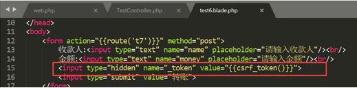
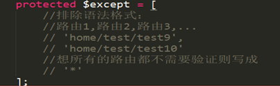

CSRF是跨站请求伪造（Cross-site request forgery）的英文缩写\
Laravel框架中避免CSRF攻击很简单：Laravel自动为每个用户Session生成了一个CSRF Token，该Token可用于验证登录用户和发起请求者是否是同一人，如果不是则请求失败。【该原理和验证码的原理是一致】
Laravel提供了一个全局帮助函数csrf_token来获取该Token值，因此只需在视图提交表单中添加如下HTML代码即可在请求中带上Token：
<input type="hidden" name="_token" value="<?php echo csrf_token(); ?>">
2.Laravel中如何避免CSRF攻击
Laravel框架是默认开启了csrf认证的（必须）。
可以在表单中添加一个隐藏域：

{{csrf_token()}}：表示直接输出token值；
{{csrf_field()}}：表示的是直接输出整个隐藏域的input框；场景选择：一般在视图里用csrf_field即可，大部分的时候在JavaScript代码段中（特别是在做ajax异步提交的时候）可以考虑用csrf_token。
CSRF验证机制与图形验证码的原理是一致的，都是将用户提交的值与与session中的值进行比对，如果一致则通过，否则不通过。
针对csrf_token与csrf_field的选择问题：
如果只需要使用值（例如，在ajax的post提交的时候），则使用csrf_token，如果需要的是隐藏域（在表单里），则使用csrf_field。
3、从CSRF验证中排除例外路由
并不是所有请求都需要避免CSRF攻击，比如去第三方API获取数据的请求。
可以通过在VerifyCsrfToken（app/Http/Middleware/VerifyCsrfToken.php）中间件中将要排除的请求URL添加到$except属性数组中：
